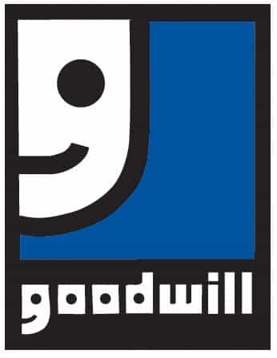

< < < Back
3 Simple Ways To Get Your Financial House In Order – Return Of Kings
Getting your finances in order is obviously not something you can do overnight. This takes time, temperance, and sometimes requires adjustments on the fly as the result of unexpected circumstances rearing their ugly heads (i.e. car trouble, illness, family emergency, et al.)
But it starts with making a conscious decision to gain control of your bottom line by realigning your priorities in terms of what’s in your best interest financially both short and long term.
I was as guilty of having my priorities out of whack as any man out there. But when I made the decision to put a stop to frivolous and unnecessary spending, my fiscal outlook improved in a hurry. There are many things I do today to make ensure I’m always in the black but for this column I’ll talk about the 3 biggest hindrances keeping men from achieving financial solvency.
1. Your Car
Every man inherently understands that women will be much more attracted to a man driving a Bugatti than a man driving a dusty ass ’95 Buick pick-a-model. While those examples are extreme, the fact of the matter is that the better a vehicle you’re pushin’, the more pussy will be available to you.
That said, too many men out here are prioritizing pussy over peace of mind. We hit the car lot financing vehicles we can barely afford (not to mention the elevated insurance costs that come with them) and a few months down the line we’re looking out the window every 3 minutes to make sure it’s still there for fear of the dreaded repo man. I speak from personal experience.
Don’t get me wrong, picking up girls is great and driving a nice car certainly helps grease the skids to pussy plundering success. But if your payment leaves you broke every month it’s not worth it—not even close.
It’s all fun and games till that payment’s due
No, I’m not suggesting going to the extreme and spending $750 on an ’84 Honda Accord that’s sure to be in the shop every week. But by the same token financing a Benz with a $750 monthly payment is equally foolhardy.
Let’s be real fellas. Buying a car you can’t afford is a bad, and very expensive way to compensate for your lack of game. Six and seven figure vehicles notwithstanding, it doesn’t matter what you drive. If you don’t have solid game you ain’t gettin’ them draws, playa.
The most financially prudent solution is to save between $3,000 and $5,000 and buy a car outright. The next best thing if you don’t have that kind of money right now is to finance a vehicle with a payment that doesn’t starve your bank account every month.
If you save your money and learn game, you’ll quickly figure out that you don’t have to push a luxury vehicle to score top notch ass on the regular. The extra cash in your pocket doesn’t hurt either.
2. Your Pad
A killer crib can certainly increase your sexual prospects. Get her back to your place and she sees your posh surroundings it’s a wrap. And if your game is on point (read: you fucked her senseless and didn’t act like she was God’s gift to the male species) she’s already thinking about what it would be like to share your abode with you (Yes gents, this is exactly how females think).
But like an overpriced automobile, an apartment with unnecessary amenities will put a serious dent in your finances. That’s not counting your 70” flat screen, leather couch, X-box (the fuck you playing video games for anyway?) and every other over priced, non-essential piece of tech you see on television.

Living like this if you’re barely getting by is foolish
Again, there’s nothing wrong with having a nice place to live and a few cool doo dads to give it some appeal. But struggling to pay the rent because your complex has a pool you’ll never swim in, tennis courts you’ll never play on, and vaulted ceilings isn’t worth being broke every month just to say you live in some “exclusive community.”
Renting a home from a private owner has many advantages. Not the least of which is that it’s almost always less expensive. Most of the time a two-bedroom house rents for less than a one bedroom luxury apartment with a bunch of extras you’ll never take advantage of.
Like I said when talking about buying an expensive car, living in an opulent condo in an upscale neighborhood you can barely afford is overcompensating for lack of game. Do yourself a favor, jump on Craigslist and find a place you like that will keep your wallet full.
3. Your Clothes
$100 for a pair of “designer” jeans? $50 for a dress shirt? $200 for a pair of sneakers? One area we as men have completely wrong is the monetary value we put in the clothes we wear.
Look, I understand looking good is important. By and large people treat one another based on the way they look. A man dressed like a bum gets treated like one and a man dressed in a suit gets treated with respect. And talking to a long-legged, pert-assed cutie on the subway will go a lot better if your threads are on point.
But when a man sits down and asks himself “Why aren’t I further along in life than I should be?” he’d do well to look in his closet and take inventory. If he’s the kind of dude that likes to keep up with the Joneses as far as his vestment game is concerned, he’ll likely be shocked if he breaks out his calculator and adds up how much he paid for these depreciating assets.
Why dudes are paying upwards of $2000 for these is beyond me
Again, looking your best is paramount when it comes to girls, game, your job, etc. But the sooner you quit shopping at the mall or “outlets” for clothes and stop paying triple figures for sneakers you’ll only wear once a quarter (because who’s gonna wear a $300 pair of sneakers every day?), the better off your financial outlook will be.
What about you, Donovan?
I’m glad you asked. Personally, I live in an 800 sq. foot studio downtown for less than $750/mo including utilities, I regularly shop at thrift stores for jeans and dress shirts, and rock a pair of $16 skateboard shoes I picked up from Walmart almost a year ago with just about everything I wear.
I don’t spend much on electronics either. I carry a smart phone I paid $30 for because I got 50% off for buying it refurbished, I don’t own a video game console which are expensive and sometimes requires a monthly subscription or payment for upgrades, and I have a 32″ flat screen I got off Craigslist for $50 because the guy selling it upgraded to a 60″ plasma.

No shame in my game…or my bottom line
And because of my financial shrewdness, the 2012 vehicle I drive is free and clear. Plus, owning my car substantially lowers my insurance rate which saves me even more coin. I also ride my bike a lot which saves money on gas (and keeps me fit).
Women have no idea whether I got my jeans and shirt at the Goodwill or an expensive men’s clothing store and they don’t give half a shit that I’m not wearing expensive shoes, that I don’t carry a $900 iPhone, or that I don’t live in a loft atop some expensive casino.
Why? Because my game is tight. All they’re concerned with is how good a time they’re having with me and the way I make them feel. Game saves lives but it also saves money.
In the end…
…there are advantages to driving an expensive car, wearing designer clothes, and living in a kick ass pad loaded with extras. As I stated earlier these things give you more opportunities with women because they make you look more viable as a long term option for provisioning.
But if you’re not in the black end of the month and not able to sock away your hard earned cash none of that stuff does you any good. What good is fucking a 10 on your 8 zillion thread count sheets in your $3500/mo condo because she saw you driving a luxury SUV if you’re searching your couch cushions the next morning for enough change to buy ramen noodles (which are terrible for your health) so you don’t starve until pay day?
Pussy isn’t worth going broke over and thanks to feminism, it’s as cheap and plentiful as its ever been. When you learn and utilize game, you’ll realize you can get plenty of it without going bankrupt trying to impress females with depreciating status symbols.
So take a good hard look at your wheels, your pad, and your threads and cut down on what’s not necessary. It won’t be long before you see that living a kick ass life doesn’t require you to spend a shit load of coin on things that decrease in value over time.
Be sure to check out Donovan’s podcast The Sharpe Reality on thesharpereality.com or his YouTube channel
Read Next: Why Every Man Must Take Control Of His Finances